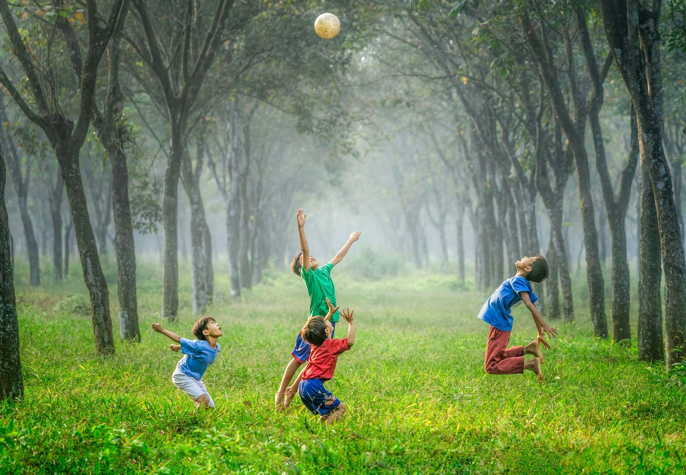
오늘날의‘놀이(스포츠) 하는 인간’의정의를 새롭게 한다.
Homo Ludens to Fine Ludens
Sports is where play becomes culture.
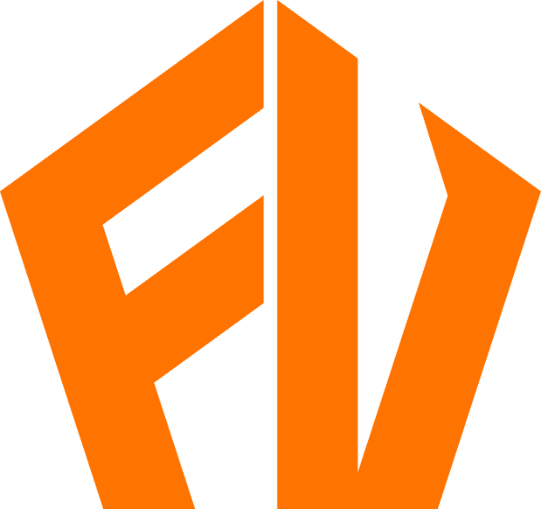
Fine Ludens
Homo Ludens to Fine Ludens
Sports is where play becomes culture.
Origin
‘Ludens’는 라틴어 ‘Homo Ludens(놀이하는 인간)’에서 비롯된 단어입니다. 인간은 놀이를 통해 문화를 만들고, 사회를 발전시켜 왔습니다. 스포츠는 그중 가장 보편적인 놀이이자 오늘날 가장 강력한 문화입니다.
네덜란드의 역사학자 요한 하위징아는 그의 저서 Homo Ludens에서 “문화는 놀이 속에서 태어나고 발전한다”고 말했습니다. 인간은 놀이를 통해 규칙을 만들고 경쟁을 만들며 문화를 만들어 왔고, 그 놀이가 가장 발전된 형태로 나타난 것이 스포츠입니다.
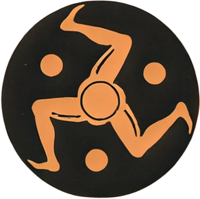
“문화는 놀이 속에서 태어나고 발전한다.”Johan Huizinga · Homo Ludens · 1938AI는 스포츠의 감동을 대신하지 않습니다. 더 깊이 이해하게 만듭니다.
하지만 스포츠를 경험하는 방식은 오랫동안 크게 변하지 않았습니다. 경기는 보고, 기억하고, 이야기로 남는 경험이었습니다. 우리는 AI 기술이 이 경험의 틀을 발전시킬 수 있다고 생각합니다.
AI와 데이터는 스포츠의 감동을 대신하는 것이 아니라 스포츠라는 놀이를 더 깊이 이해하고 더 풍부하게 경험하게 만드는 도구가 될 수 있습니다. Homo Ludens에서 Fine Ludens로, 우리는 AI 기술을 통해 현재와 미래의 스포츠 문화를 더 FINE하게 발전시키는 사람들입니다.
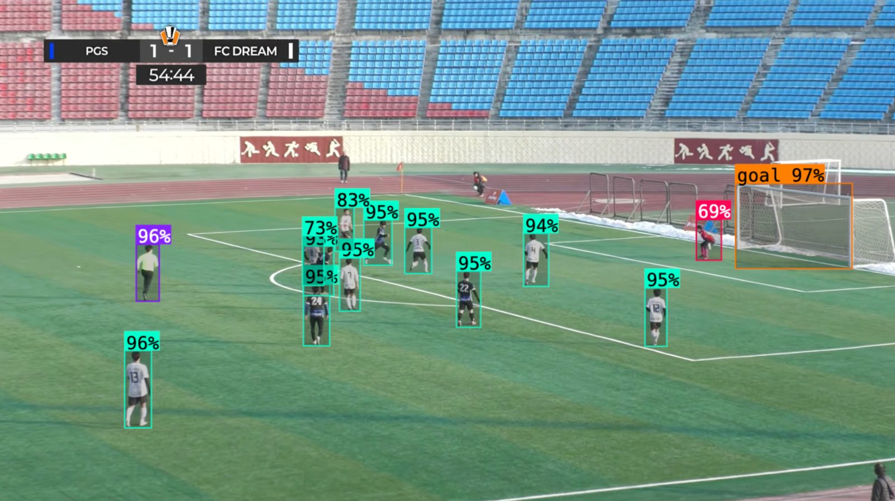
Fine Ludens 주관 동두천시장배 전국대학동아리축구대회 CAMP-US 컵
Homo Ludens에서
Fine Ludens로.
Mission & Vision
Mission
생활스포츠가 단순 참여 경험을 넘어, 스스로의 플레이를 이해하고 돌아보며 더 깊이 즐길 수 있도록 경기 데이터와 하이라이트를 자동으로 생성합니다.
우리가 만드는 모든 제품은 하나의 질문을 기준으로 판단합니다. “이것이 스포츠를 더 재미있고 의미 있는 경험으로 만드는가?”
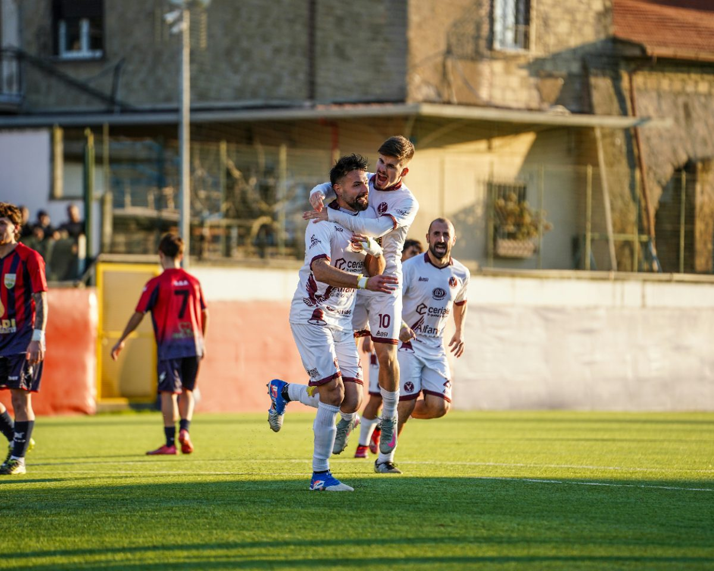
Vision
분석에서 시작해 기록, 하이라이트, 비교, 공유, 참여 경험을 하나의 흐름으로 연결하고, 엘리트와 일반 참여자 사이의 간극을 줄입니다.
우리는 50%를 고민하지 않고 10%를 반복 실행합니다. 실행 횟수를 경쟁력으로 만들고, 모든 판단을 데이터로 검증합니다.
완성된 하나의 답보다, 빠른 여러 번의 시도로 정답에 수렴합니다.
실패를 손실이 아닌 확률 업데이트로 보고, 실행 횟수 자체를 자산으로 만듭니다.
평균적인 선택이 아니라 결과적으로 맞는 선택을 기준으로 판단합니다.
아이디어보다 결과를 중시하며, 모든 실행을 데이터로 검증합니다.
실행과 학습의 사이클을 늦추는 요소를 제거하고 자동화로 반복을 가속합니다.
의사결정을 위임하지 않고 스스로 내리며, 판단의 책임도 함께 가집니다.
자신의 판단 근거를 점검하고, 틀렸을 때 빠르게 수정합니다. 빠른 실행만큼 빠른 수정이 가능해야 한다는 것이 우리의 원칙입니다.
하지 않는 말
우리가 지향하는 말
경기는 많지만, 데이터를 이해하는 경험은 일부에게만 제한되어 있습니다.
기존 방식은 시간 소모가 커서 반복 활용과 확장이 어렵습니다.
기록·정보·기회의 흐름이 단절되지 않도록 구조 자체를 바꿉니다.
Team
파인루덴스는 2023년 대학 창업동아리에서 시작해 지금까지 함께해온 동료들이 만든 팀입니다.
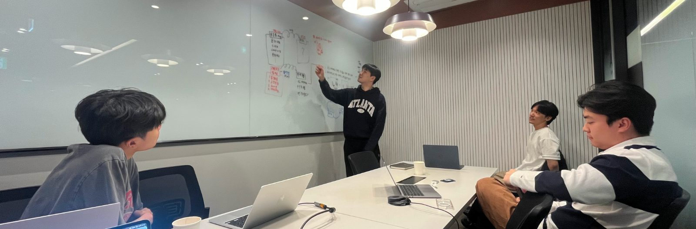
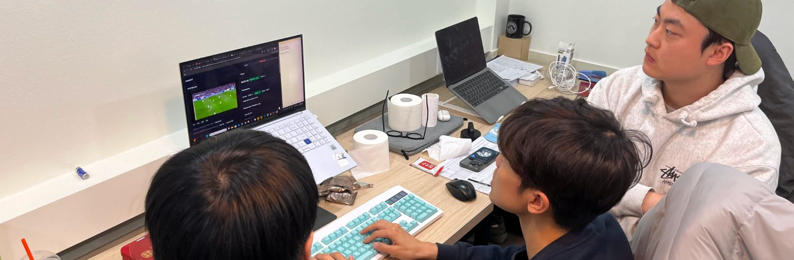
저희는 단기적인 수익이나 빠른 성과보다, 생활스포츠를 더 나은 여가이자 더 공정한 산업으로 바꾸겠다는 미션을 우선합니다.
같은 문제의식을 오래 공유해온 팀워크, 그리고 밤낮없이 실행으로 답해온 허슬이 파인루덴스의 가장 큰 경쟁력입니다.
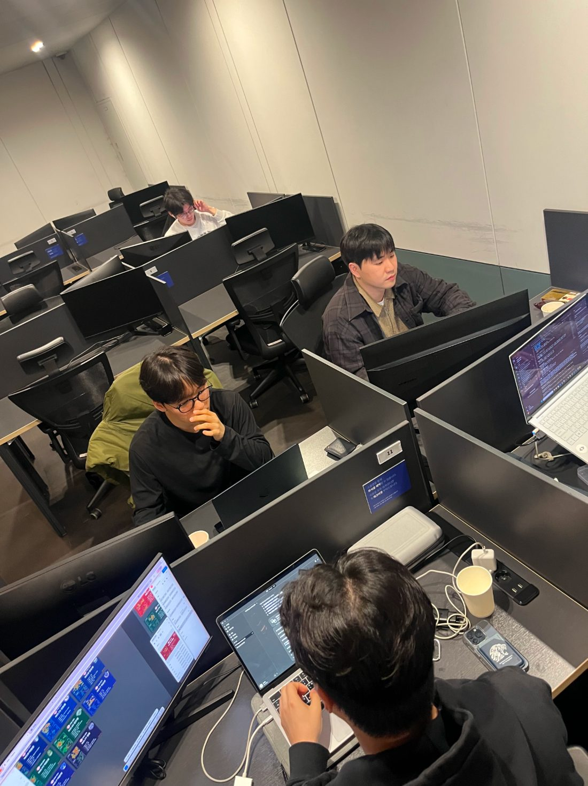
대회 주관, 제품 출시, 기관 협력까지 매 단계를 현장에서 증명해 왔습니다.
23.3.
한양대학교 창업동아리 시작
초기 개발·분석 작업
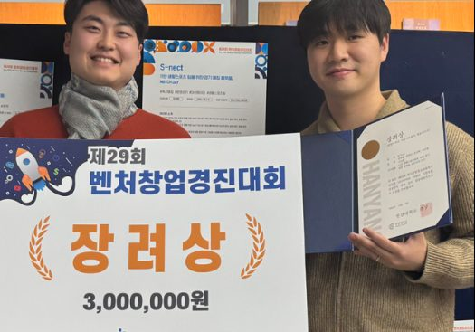
24.12.
한양대학교 29회 벤처창업경진대회 장려상
제29회 벤처창업경진대회 장려상
25.8.
개인사업자 '파인플레이' 설립
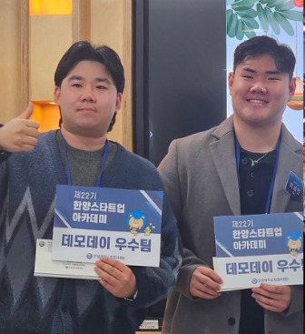
25.12.
한양대학교 스타트업 아카데미 22기 우수데모팀
한양스타트업 아카데미 22기 데모데이 우수팀
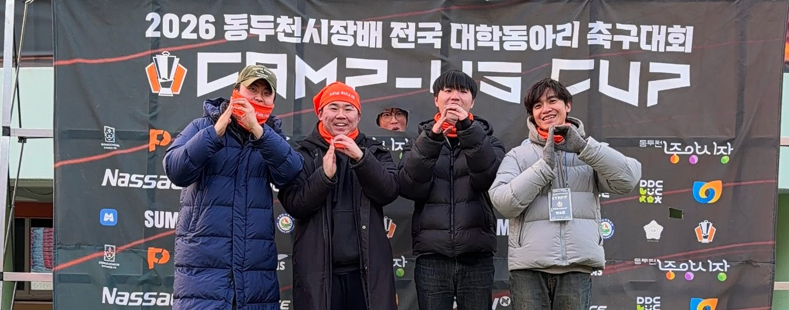
26.1.
동두천시장배 전국대학동아리 축구대회 CAMP-US컵 주관
CAMP-US컵 운영 현장
26.3.
법인사업자 '주식회사 파인루덴스' 설립
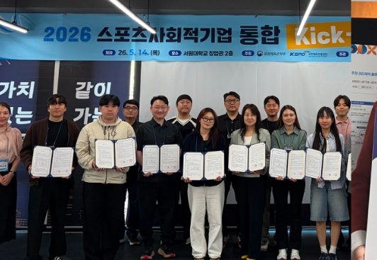
26.5.
문체부 스포츠산업창업지원 지원기업 선정
2026 스포츠 사회적기업 통합 킥오프
26.6.
교육부 2026 학생 창업유망팀 300+ 도약트랙 선정
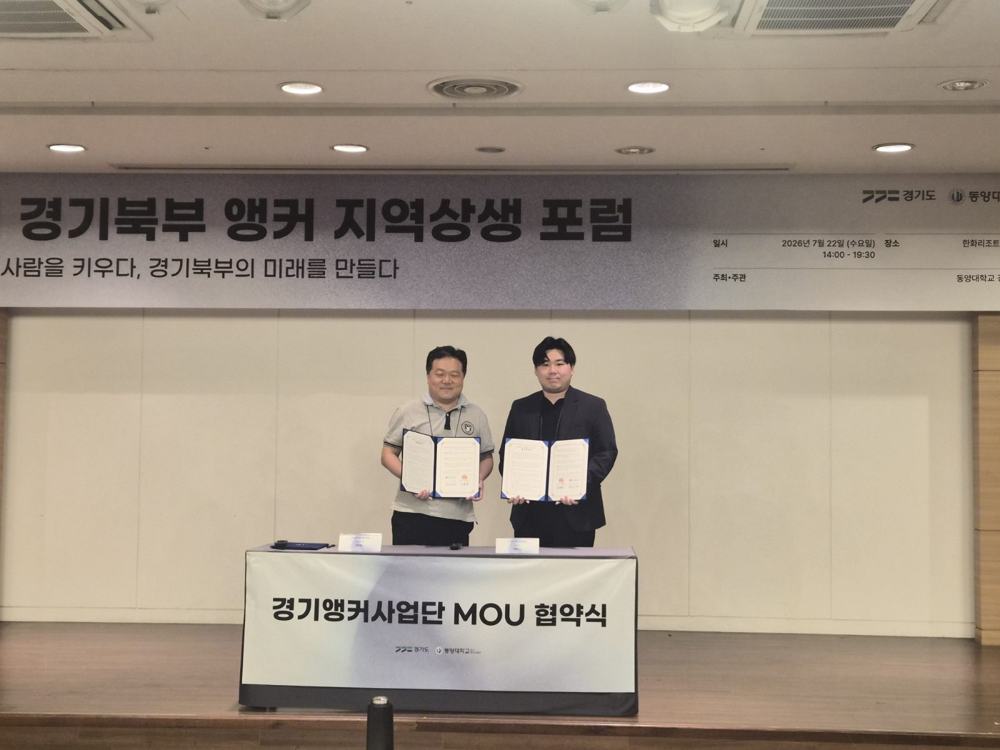
26.7.
경기앵커사업단 MOU 체결 (경기 북부 성장동력 허브 구축)
경기북부 앵커 지역상생 포럼 · 경기앵커사업단 MOU 협약식
News
기관 지원사업 선정과 대회 주관 실적입니다.
전국에서 선정된 400팀 중, 투자 유치와 사업 고도화를 중심으로 지원하는 도약트랙 40팀에 포함되었습니다. 멘토링·창업교육·네트워킹을 통해 사업 검증과 제품 강화를 이어갑니다.
교육부 · 한국청년기업가정신재단
생활·아마추어 스포츠를 위한 AI 분석 솔루션 개발을 이어가며 창업 보육과 사업화 지원을 받습니다. 팀·리그·대회 주최 측과의 협업을 확대합니다.
국민체육진흥공단 · 서원대학교
동두천종합운동장에서 전국 16개 대학 동아리팀, 약 400명의 학생 선수가 3일간 경쟁했습니다. Fine Ludens는 공식 주관·운영사로 참여해 AI 분석 솔루션을 현장에 적용했습니다.
동양대학교 경기북부 RISE 사업단 · 동두천시축구협회 공동주최
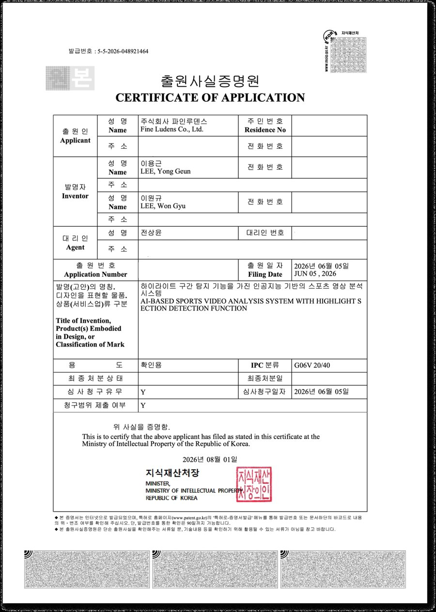
영상에서 어느 구간이 핵심 장면인지 판별하는 방식을 특허로 출원했습니다. 공의 거동·선수 밀집도·골대 근접도를 정량화해 점수를 매기고, 카메라 줌이 변해도 같은 기준이 유지되도록 정규화합니다.
2026. 06. 05 출원 · 심사청구 완료 · IPC G06V 20/40
2026 북중미 월드컵 본선 경기를 보며 직접 수집한 데이터로 분석 카드뉴스를 만들었습니다. 하이라이트와 MVP 카드뉴스는 대회 주최 측과 함께 제작했습니다.
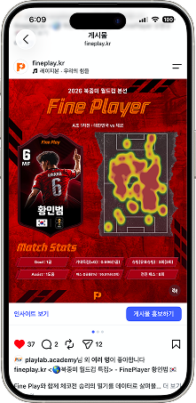
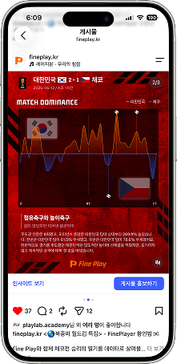
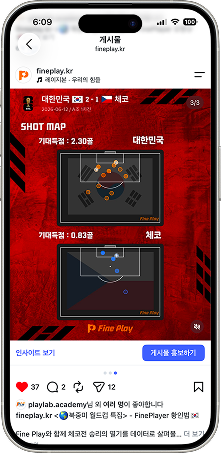
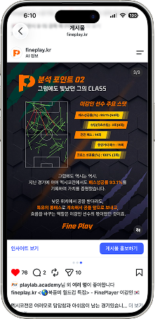
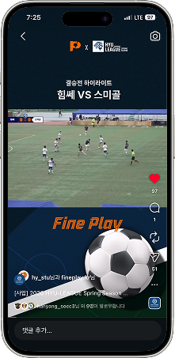
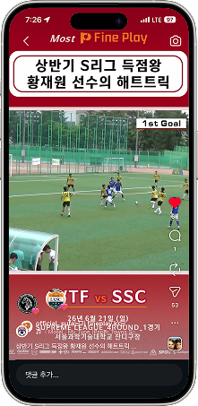
모든 경기를 특별하게.
회사 소개서가 필요하시면 기업소개서를 확인하거나 바로 문의해 주세요.
문의하기